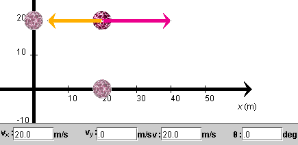
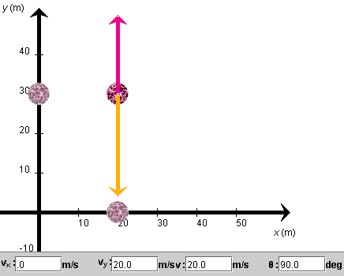
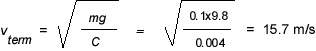
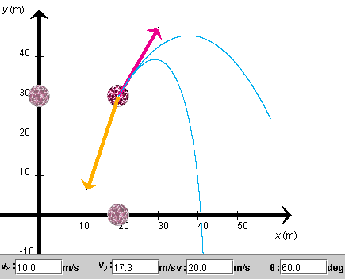
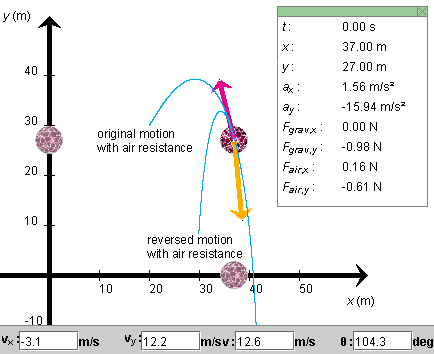

Prerequisites
Students should be familiar with the concepts of velocity and acceleration, at the vector level. Students should know Newton's second law.
Students should be familiar with the accompanying Lesson on Projectile Motion.
Learning Outcomes
Students will develop an understanding of some effects of air resistance on projectile motion and will learn about the concepts of terminal velocity and terminal speed and motion irreversibility.
Instructions
Students should know how the applet functions, as described in Help and ShowMe.
The applet should be open. The step-by-step instructions in the following text are to be done in the applet. You may need to toggle back and forth between instructions and applet if your screen space is limited.
 The Ball's Acceleration Due Only to Air Resistance
The Ball's Acceleration Due Only to Air Resistance
 The Ball's Acceleration Due to Air
Resistance and Gravity - Vertical Motion
The Ball's Acceleration Due to Air
Resistance and Gravity - Vertical Motion
 Time of Rise and Fall for a Ball Subject to
Air Resistance and Gravity
Time of Rise and Fall for a Ball Subject to
Air Resistance and Gravity
 The Ball's Acceleration Due to Air
Resistance and Gravity - Nonvertical Motion
The Ball's Acceleration Due to Air
Resistance and Gravity - Nonvertical Motion
Exercise 1. Let's look at the ball's motion when it is subject only to air resistance and not gravity.
RESET the applet, and set the magnitude g of the acceleration due to gravity to 0. Position the ball away from the origin at (x, y) = (20, 20) m. Set the velocity to magnitude 20 m/s and direction that is horizontal and to the right, i.e., θ = 0. Set the drag coefficient C to 0.004 kg/m. The drag coefficient determines the magnitude Fair of the force of air resistance via the expression
Fair = C v2
 (1)
(1)
where v is the ball's speed. The direction of the force of air resistance is always opposite to that of the velocity of the ball.
If the only force acting on the ball is the force of air resistance, Newton's second law applied to the ball combined with Expression (1) gives the following equation for the magnitude a of the ball's acceleration
C v2 = m a (2)
(2)
whence
a = (C/m) v2 .
 (3)
(3)
Thus, when there is air resistance, the ball's mass does have an effect on the ball's acceleration. This is in contrast to free fall, where the ball is subject only to the force of gravity and the ball's acceleration does not depend on the ball's mass. (The mass cancels out of the Newton's-second-law equation .)
Question . Does the acceleration increase or decrease as the mass is increased? Make a prediction based on Eq.(3), and check it by varying the ball's mass with the slider. Does the magnitude of the acceleration vary as you predicted?
Exercise 2. Set the ball's mass to 0.1 kg. Display the velocity and acceleration vectors. Figure 1 below shows what you should be able to see.

Figure 1
PLAY the simulation. In your Notebook, comment on the following.
Comment. The motion of the ball is similar to that of a car coasting to a stop on a level road while the engine is disengaged. However, there are also some differences. Although at higher speeds, the car's air resistance force is well described by Expression (1), at lower speeds the quadratic dependence on speed is changed more to a linear dependence. There are other forces acting on the car as well, notably dissipative friction between the tires and the road. As a result, the car comes to a definite stop in a finite time, unlike the ball in the simulation.

Exercise 1. Now let's look at the ball's motion when the ball is subject to both the force of air resistance and the force of gravity. Let's look at vertical motion where both forces are acting along the line of motion.
REWIND the applet, and change the initial velocity direction to vertically upward, i.e., θ = 90o. Keep the magnitude of the initial velocity equal to 20 m/s, C equal to 0.004 kg/m, and m equal to 0.1 kg. Make sure you change g from 0 to 9.8 m/s2. The velocity and acceleration vectors should look as in Figure 2 below. Also, move the ball upward to y = 30 m.

Figure 2
Notice that the acceleration vector's magnitude is greater in Figure 2 than in Figure 1, because the acceleration due to gravity is now added.
Exercise 2. Play the simulation, and comment on the following in your Notebook.
Problem 1. In the applet, the ball approaches a terminal speed of 15.7 m/s on its way down. Using Eq.(3), determine the theoretical value for this speed and compare it with the value from the applet.
Solution. There are two forces acting on the ball, the force of gravity and the force of air resistance. On the way down, these forces oppose each other: the force of gravity points downward and the force of air resistance upward. As the ball's speed increases while the ball is falling, the magnitude of the force of air resistance increases quadratically with the speed.
As the force of air resistance approaches the force of gravity in magnitude, the net force and therefore the acceleration go to zero and the ball approaches a constant terminal velocity. The terminal velocity is realized (only after an infinite amount of time has elapsed) when the force of air resistance has exactly the same magnitude as the force of gravity.
Using Expression (1) for the magnitude of the force of air resistance and the standard expression mg for the magnitude of the force of gravity, the terminal speed vterm is determined by the equation
C vterm2 =
mg  (4)
(4)
whence
  (5)
(5)
Skydivers experience terminal speed, although the value in that case is higher than value (5). Both the mass and the drag coefficient are different for a skydiver than the values used here.
Rain drops too reach ground with a terminal speed. Their terminal speed is a lot smaller than that of a skydiver. If it were otherwise, nobody would enjoy dancing in the rain very much.
Exercise 3. REWIND the applet, and keep all settings as in the preceding section "The Ball's Acceleration Due To Air Resistance And Gravity - Vertical Motion". Measure the time it takes the ball to reach the top, by stepping the ball to this position, and then the time it takes to fall back down to the starting level.
When there is no air resistance, it takes the same amount of time for a ball to go up and to come down. Is this still true when there is air resistance? If not, which time is larger? Can you explain what you find?
Hint. Sketch the y-component vy of the ball's velocity during the ball's up-and-down motion vs. time. You can obtain the vy-values from the applet while you step through the motion. Remember that the area between the graph of vy vs. t and the t-axis for a given time interval represents the ball's displacement during that time interval. An area below the t-axis represents a negative displacement.
Exercise 1. This time let us investigate the effect of air resistance when the force of air resistance does not act along the same line as the force of gravity.
REWIND the applet, and set the initial velocity angle to 60o. Keep all other settings as in the preceding two sections. Display the velocity and acceleration vectors.
Figure 3 below shows the initial velocity and acceleration vectors. The acceleration is equal to the vector sum of the acceleration due to air resistance, which is oppositely directed to the velocity, and the acceleration due to gravity, which is downward. The result is an acceleration that is somewhere in between these two and not in line with either one.

Figure 3
Exercise 2. Play the motion. The motion should be along the lower of the two trajectories shown in Figure 3.
Rewind the applet, and set the drag coefficient C to 0. Play the motion again. The motion should now be along the upper one of the two trajectories shown in Figure 3.
Qualitatively, explain why one gets these two trajectories for the two settings of C.
Question 1. In the accompanying Lesson, in Exercise 2 at the end of the section "Predicting the Ball's Motion", we found that the ball's motion is reversible when there is no air resistance. Is the motion still reversible when there is air resistance?
Answer. Use the applet to find out. REWIND the applet, and STEP the motion with air resistance forward to t = 3.0 s. You should find the following position and velocity values:
(x, y) = (37.08, 27.02) m,  (vx,
vy) = (3.1, -12.2) m/s.
(vx,
vy) = (3.1, -12.2) m/s. (6)
(6)
In your Notebook, make a drawing of the velocity and acceleration vectors at this point and record their values. Then REWIND the applet.
Drag the ball back to the position setting recorded in Eqs.(6). Actually, set the position to (x, y) = (37.00, 27.00) m. That's as close as the applet will let you. This will be close enough.
Remember that it is easiest if you adjust the x-coordinate first and then adjust the y-coordinate with the Shift key held down. Readjust the velocity to the values recorded in Equations (6). You should see the velocity and acceleration vectors displayed as you have drawn them in your Notebook.
Now reverse the velocity. The easiest way to do this is by reversing the signs in front of the x and y components of the velocity, i.e., to set these to (vx, vy) = (-3.2, 12.2) m/s. Notice the velocity and acceleration vectors now! The vectors are shown in Figure 4 below, which shows the ball at the t = 3.0-s position of the original motion, but with the velocity vector reversed. (Note that the applet resets the time to 0.)

Figure 4
Compared to the drawing in your Notebook, the velocity vector in Figure 4 is reversed, as expected, but the acceleration vector looks quite different from that in your Notebook. Can you explain why?
For the motion to be reversible, the acceleration vector should not change. The fact that it changes quite a bit upon velocity reversal indicates that reversing the velocity does not reverse the motion. PLAY the applet, and observe the motion. You should see a trajectory like the lower trajectory in Figure 4. It is quite different from the initial trajectory.
Generally speaking, motions cannot be reversed when they are affected by dissipative friction, as is the case here. In the macroscopic world, dissipative friction is everywhere to some degree. So macroscopic motions, and macroscopic processes in general, tend to be irreversible.
Question 2. When a block slides on a horizontal table, the block's motion will come to a stop. Is this motion reversible? What would the reversed motion look like?